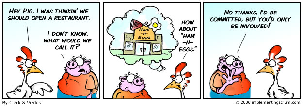

什么是敏捷开发 敏捷开发是一种以用户的需求进化为核心、迭代、循序渐进的开发方法。 在敏捷开发中，软件项目的构建被切分成多个子项目，各个子项目的成果都经过测试，具备集成和可运行的特征。 换言之，就是把一个大项目分为多个相互联系，但也可独立运行的小项目，并分别完成， 在此过程中软件一直处于可使用状态。
敏捷宣言遵循的原则 1 我们最重要的目标，是通过持续不断地及早交付有价值的软件使客户满意。 2 欣然面对需求变化，即使在开发后期也一样。为了客户的竞争优势，敏捷过程掌控变化。 3 经常地交付可工作的软件，相隔几星期或一两个月，倾向于采取较短的周期。 4 业务人员和开发人员必须相互合作，项目中的每一天都不例外。 5 激发个体的斗志，以他们为核心搭建项目。提供所需的环境和支援，辅以信任，从而达成目标。 6 不论团队内外，传递信息效果最好效率也最高的方式是面对面的交谈。
敏捷宣言遵循的原则 7 可工作的软件是进度的首要度量标准。 8 敏捷过程倡导可持续开发。责任人、开发人员和用户要能够共同维持其步调稳定延续。 9 坚持不懈地追求技术卓越和良好设计，敏捷能力由此增强。 10 以简洁为本，它是极力减少不必要工作量的艺术。 11 最好的架构、需求和设计出自自组织团队。 12 团队定期地反思如何能提高成效，并依此调整自身的举止表现。
基于以上原则，您打算怎么做？ 我们会必须对让需要为项目全身心投入的人：产品负责人，开发组组长，开发的组员，甚至对应测试，美工 坐在一起。让他们跟其他区分开。 需要让上面这些人每天都需要沟通 开发人员刚做出东西还没提测前就需要给产品负责人的演示，接受他们的建议，并及时修改 开发周期可能就2-4周 做到自管理，Scrum master一般可能就是组长来做，整个团队自己负责管理自己，让每个人都有ownership感。 管理者只是给他们提供支持而已。比如帮他们处理好权限问题，请假，福利，权利之类的，辅助性的，支持性的事情。
Scrum不是方法学，是一个框架 Scrum不会告诉你到底具体该做些什么，而只说出了大致的模式。所以以下我提及到的具体事情，只是一种形态而已，大家完全可以不遵守。 Scrum规定了一个非常简单的开发流程, 以团队为基础，是一种在需求迅速变化情况下迭代地、增量地开发系统和产品的方法。 Scrum是一个控制由利益和需求冲突导致的混乱的流程。 Scrum是改善交流并最优化合作的方式，是最大化生产率的一种方法。能让每个参与者都对自己所做的工作以及自己做出的贡献感到骄傲，并让他们发挥到最佳水平。 Scrum是一种检测产品开发和生产过程中障碍并将其去除的方式。 Scrum适用于单一的项目到整个企业。Scrum可以控制并组织多个具有相关性的产品开发以及拥有超过千名开发者和执行者的项目实施过程。
把人分为两个种类：鸡和猪  作为猪的主要有： Scrum Master Team Member（不仅包含开发，可以是测试，美工，一个全职能的团队） Product Owner（可能就是产品经理） 作为鸡的主要有： 用户，客户，提供商，业务人员，领导（经理） 等等。
如何使用Scrum框架 产品经理必须维护好需求的列表（列表中必须有的要素：优先级，明确好完成的标准） Scrum Master需要把这一个迭代的周期和人力资源情况定义好（要排除请假的人天） 评估人力资源的时候需要引入focus factor专注因子，一般设置为0.6，0.65，0.7,(0.5太低，0.8太高） 上午 Scrum Master主持会议 Sprint开始的那天，团队坐在一起，针对第一个需求，产品经理先描述一遍，其他人提出问题，产品经理一一解答。 然后大家一起通过扑克牌的方式投票。单位是人天。 如果大家差异很大，数字最大的和最小的都先发言说一下理由，然后继续投票。直到数字差不多或者完全一样了。那么就定一个估算值。 接着进行下一个需求的评估。一直评估到人力资源都用完了。
如何使用Scrum框架 下午 Scrum Master主持会议 把这一期关联进来的需求分配好对应的人。（产品经理可不参加） 一个一个做任务分解。无需关心接需求是的粗略评估时间。 尽量多花点时间，详细地做好这一步。免得开发过程中，不断的添加过多任务，实际时间超出预估太多。
如何使用Scrum框架 弄块小黑板 每天早上有个站立会，大家说一下，昨天做了什么，今天做了什么，遇到是障碍？ Scrum Master总结一下，整个sprint的进展，更新燃尽图。 站立会的时候，产品经理是猪角色需要参加的。其他鸡的角色最多只能旁听不能发言
如何使用Scrum框架 安排开放式的sprint演示，演示给主要对象：产品经理和测试。而不是领导 每天如此，直到顺利发布。 接着Scrum Master需要主持一个 回顾总结会议。大家说说做得好的和做得差的。 每个迭代周期都是一个sprint,意思是冲刺，其实一直连续地这么做下去，会非常辛苦的。 所以建议每个sprint结束后，会有1-3天调整，比如产品经理尽量把下期需求列表都准备出来，团队成员可以看看，或者自己尝试学点新的东西
以后可能遇到的问题 看上去，使用这个框架，很简单的。其实实际操作起来会遇到各种问题的，都已经有人给你们总结好了经验。 比如到底怎么定义优先级？ 什么是团队生产率？ 什么是point? 如何定义验收标准？ 万一这个sprint没把所有接的需求做完，怎么办？ 如何合并小的团队成为一个scrum团队，如何拆分大团队 一般选择那些工具配合scrum流程执行